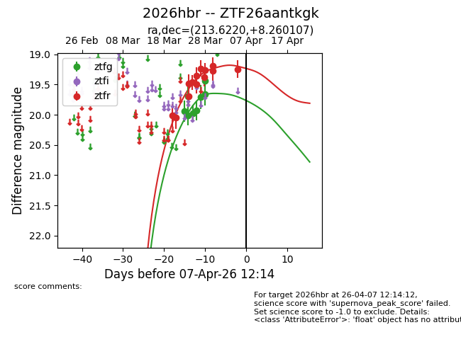
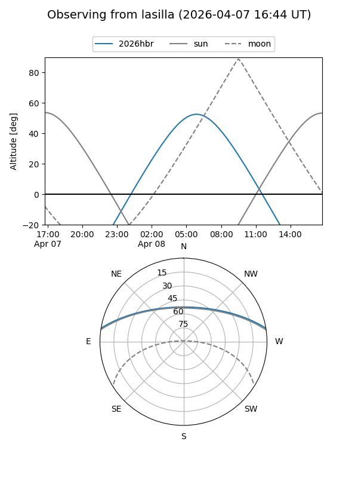
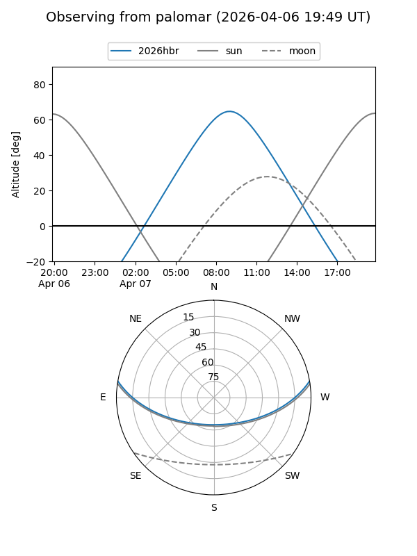
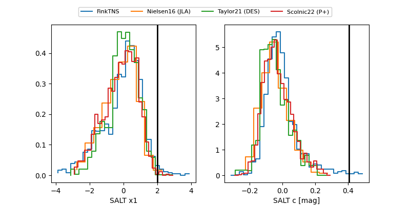

2026hbr
Target 2026hbr at 2026-04-07 12:18
Aliases and brokers:
FINK: link
Lasair: link
ALeRCE: link
TNS: link
YSE: link
alt names
ZTF26aantkgk (ztf,fink_ztf)
2026hbr (tns,yse)
Coordinates:
equatorial (ra, dec) = 213.6220,+8.26011
equatorial (HMS+DMS) = 14:14:29.29,+08:15:36.39
galactic (l, b) = (352.9593,+62.75623)
Flags:
Photometry:
last ztfg=19.67, ztfr=19.25
8 ztfg, 13 ztfr detections
Lightcurve

Visibility


Additional plots
